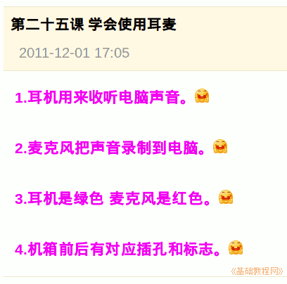

2011-2012 第一学期七年级电脑操作基础教学课程设计
作者：TeliuTe 来源：基础教程网
二十五、学会使用耳麦 返回目录 下一课
学习目标：学会使用耳麦；
注意事项：根据颜色来区分；
1、使用耳表
1）耳麦是由耳机和麦克风两部分组成的；
2）绿色的是耳机，红色的是麦克风；
3）机箱上找对应的颜色插入；
4）也可以看一下上面画的标志；

板书设计：第25课 学会使用耳麦
1.耳机用来收听电脑音乐。
2.麦克风把声音录制到电脑。
3.耳机是绿色、麦克风是红色。
4.机箱前后有对应插孔和标志。
课后记 2011-12-1 17:55 ：
静下来依然有些少筋缺弦的还好没什么大问题
下午七年级的课，学习使用耳机
--
刚一个班来说要练什么朗读占信技课
这些老师真是脑子进水没事就想着占信技课
--
3班还是乱，不能退缩，该训的训
现在学生嘴够脏的，影视里的情色都能出口
--
速度太快了，没找出可以练习的例子
只能写篇日志，耳机都没找着
--
把投票列入检查，发现有很多学生不会投票
挨着讲一下，以后应该要好些了
--
准备下节课讲网络，提前先预习下
具体内容可以参考教材上的，自己调整
--
2班的习惯较好，跟班主任关系挺大的
那么课应该也跟任课老师有挺大的关系
--
每个班的内容稍稍有些差异，这样可以防止抄袭
每次也要求一下，发现就把抄的训一顿
本节学习了使用耳麦的基础知识，如果你成功地完成了练习，请继续学习下一课内容；
返回目录 下一课
本教程由86团学校TeliuTe制作|著作权所有
基础教程网：http://teliute.org/
美丽的校园……
转载和引用本站内容，请保留版权信息和本站链接。